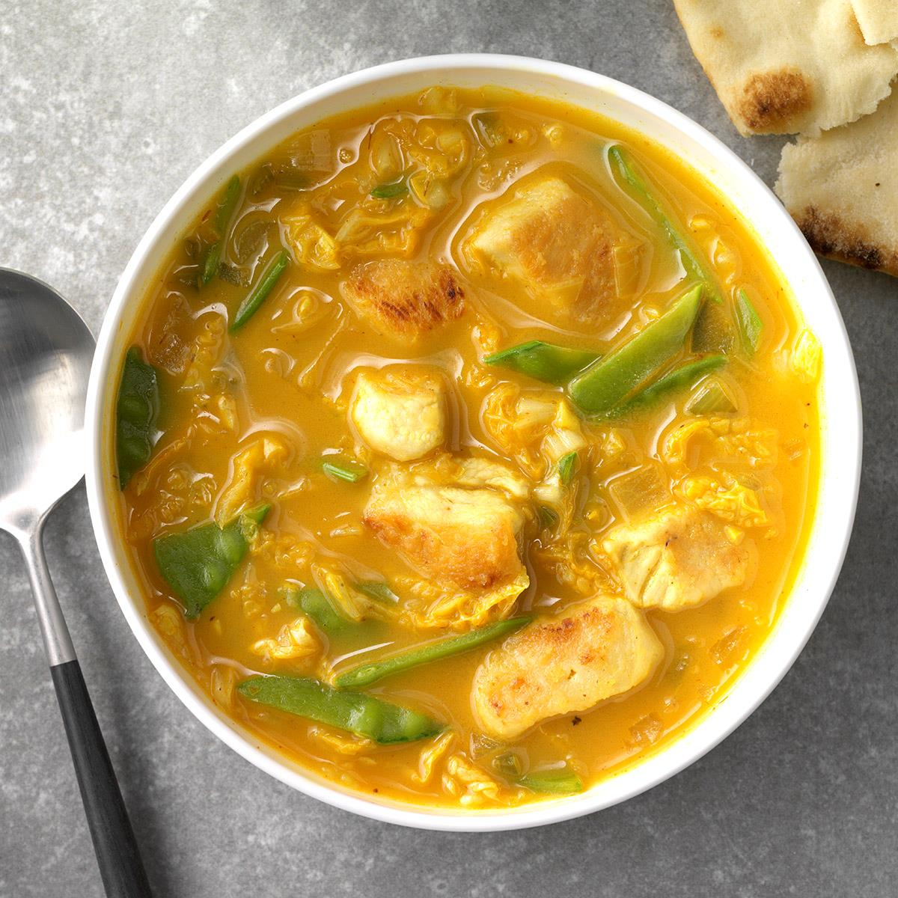

SPICY THAI SEAFOOD SOUP
4 SERVINGS
30 MINUTES

INGREDIENTS
- 2 Cloves Garlic
- 1 Tbsp Spicy Thai Paste
- 1 tsp Fish Sauce
- 1.5 Cups Chicken Broth
- 1 Cup Water
- 1 Can Coconut Milk
- 1 Filet Frozen Cod
- 1 Package Frozen Mussles
- Butter
- Cilantro
- Red Onion
- Red Cabbage
- Lime
DIRECTIONS
- Mince the garlic and add to a pot with butter.
- Cook garlic until browned and add spicy thai paste.
- Add chicken broth, water, mussles and cubbed cod to pot.
- Let simmer for 20+ minutes.
The longer the steep, the more flavourful the broth.
- Add coconut milk and mix.
(Opt.) Add butter, salt and pepper to taste.
- Laddle hot soup into bowl.
Garnish with cilantro, cabbage, onion and lime and enjoy!
Back to Recipes